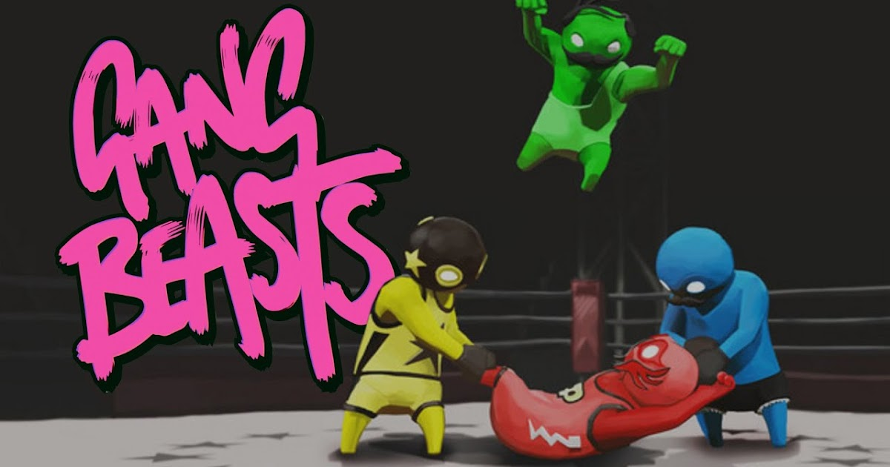

Juego en línea o por WiFi local con 4-15 jugadores mientras intentas preparar tu
nave espacial para la partida, ¡pero ten cuidado porque uno será un impostor empeñado en matar a todos!
Los compañeros de tripulación pueden ganar completando todas las tareas o descubriendo y votando al impostor
para que salga de la nave.
El impostor puede utilizar el sabotaje para provocar el caos, facilitando las muertes y mejorando las coartadas.

En una civilización asolada, plagada de infectados y crueles supervivientes, Joel, nuestro exhausto
protagonista, es contratado para sacar a escondidas a una chica de 14 años, Ellie, de una zona militar en
cuarentena. Pero lo que comienza siendo una simple tarea, pronto se transforma en un brutal viaje por el país.

Gang Beasts es un desternillante juego multijugador de peleas absurdas entre personajes gelatinosos y
gruñones que tienen lugar en los peligrosos entornos de las calles de la ciudad de Picadillo.